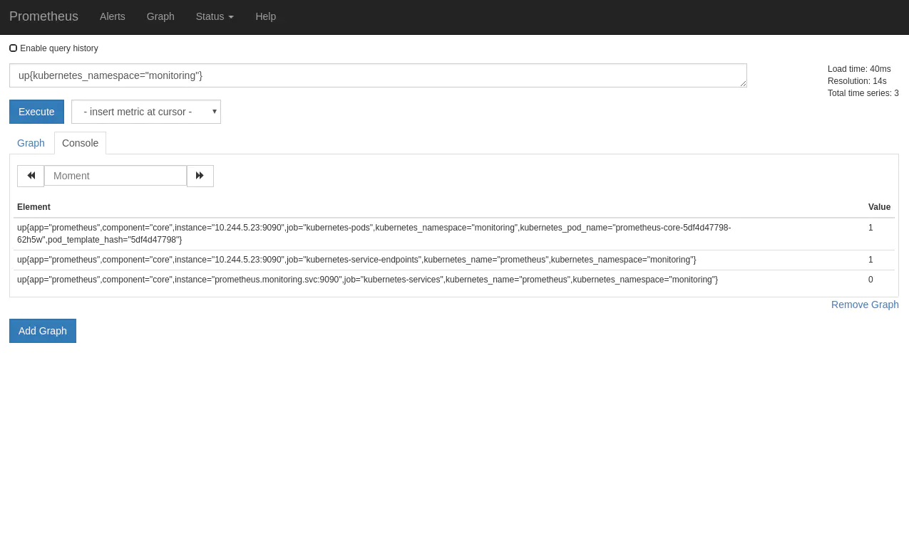
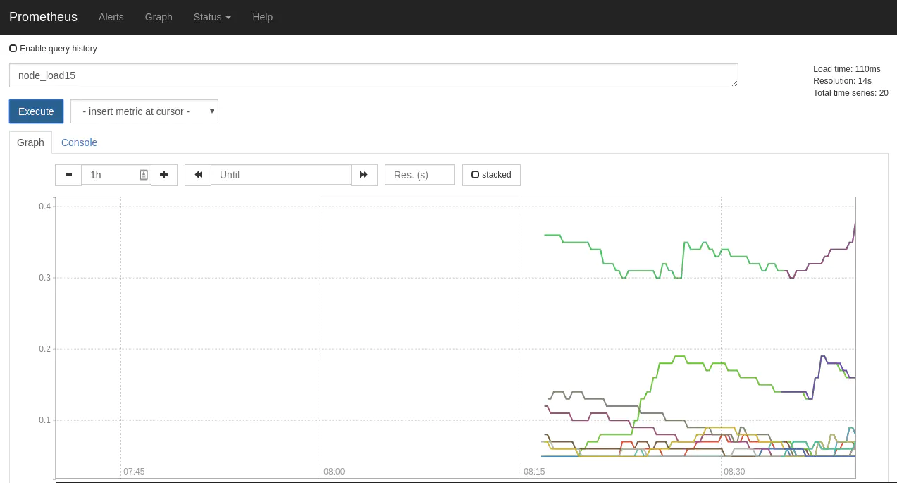

- 01 开篇： Kubernetes 是什么以及为什么需要它.md.html
- 02 初步认识：Kubernetes 基础概念.md.html
- 03 宏观认识：整体架构.md.html
- 04 搭建 Kubernetes 集群 - 本地快速搭建.md.html
- 05 动手实践：搭建一个 Kubernetes 集群 - 生产可用.md.html
- 06 集群管理：初识 kubectl.md.html
- 07 集群管理：以 Redis 为例-部署及访问.md.html
- 08 安全重点 认证和授权.md.html
- 09 应用发布：部署实际项目.md.html
- 10 应用管理：初识 Helm.md.html
- 11 部署实践：以 Helm 部署项目.md.html
- 12 庖丁解牛：kube-apiserver.md.html
- 13 庖丁解牛：etcd.md.html
- 14 庖丁解牛：controller-manager.md.html
- 15 庖丁解牛：kube-scheduler.md.html
- 16 庖丁解牛：kubelet.md.html
- 17 庖丁解牛：kube-proxy.md.html
- 18 庖丁解牛：Container Runtime （Docker）.md.html
- 19 Troubleshoot.md.html
- 20 扩展增强：Dashboard.md.html
- 21 扩展增强：CoreDNS.md.html
- 22 服务增强：Ingress.md.html
- 23 监控实践：对 K8S 集群进行监控.md.html
- 24 总结.md.html
- 捐赠
23 监控实践：对 K8S 集群进行监控
整体概览
通过前面的学习，我们对 K8S 有了一定的了解，也具备了一定的集群管理和排错能力。但如果要应用于生产环境中，不可能随时随地的都盯着集群，我们需要扩展我们对集群的感知能力。
本节，我们将介绍下 K8S 集群监控相关的内容。
监控什么
除去 K8S 外，我们平时自己开发的系统或者负责的项目，一般都是有监控的。监控可以提升我们的感知能力，便于我们及时了解集群的变化，以及知道哪里出现了问题。
K8S 是一个典型的分布式系统，组件很多，那么监控的目标，就变的很重要了。
总体来讲，对 K8S 集群的监控的话，主要有以下方面：
- 节点情况
- K8S 集群自身状态
- 部署在 K8S 内的应用的状态
Prometheus
对于 K8S 的监控，我们选择 CNCF 旗下次于 K8S 毕业的项目 Prometheus 。
Prometheus 是一个非常灵活易于扩展的监控系统，它通过各种 exporter 暴露数据，并由 prometheus server 定时去拉数据，然后存储。
它自己提供了一个简单的前端界面，可在其中使用 PromQL 的语法进行查询，并进行图形化展示。
安装 Prometheus
这里推荐一个项目 Prometheus Operator, 尽管该项目还处于 Beta 阶段，但是它给在 K8S 中搭建基于 Prometheus 的监控提供了很大的便利。
我们此处选择以一般的方式进行部署，带你了解其整体的过程。
- 创建一个独立的
Namespace：
apiVersion: v1
kind: Namespace
metadata:
name: monitoring
# 将文件保存为 namespace.yaml 的文件，并执行 kubectl apply -f namespace.yaml 即可，后面不再赘述。
master $ kubectl apply -f namespace.yaml
namespace/monitoring created
- RBAC
我们的集群使用 kubeadm 创建，默认开启了 RBAC，所以现在需要创建相关的 Role 和 binding。
apiVersion: rbac.authorization.k8s.io/v1
kind: ClusterRoleBinding
metadata:
name: prometheus
roleRef:
apiGroup: rbac.authorization.k8s.io
kind: ClusterRole
name: prometheus
subjects:
- kind: ServiceAccount
name: prometheus-k8s
namespace: monitoring
---
apiVersion: rbac.authorization.k8s.io/v1
kind: ClusterRole
metadata:
name: prometheus
rules:
- apiGroups: [""]
resources:
- nodes
- nodes/proxy
- services
- endpoints
- pods
verbs: ["get", "list", "watch"]
- apiGroups: [""]
resources:
- configmaps
verbs: ["get"]
- nonResourceURLs: ["/metrics"]
verbs: ["get"]
---
apiVersion: v1
kind: ServiceAccount
metadata:
name: prometheus-k8s
namespace: monitoring
执行创建
master $ kubectl apply -f rbac.yaml
clusterrolebinding.rbac.authorization.k8s.io/prometheus created
clusterrole.rbac.authorization.k8s.io/prometheus created
serviceaccount/prometheus-k8s created
- 创建 Promethes 的配置文件
其中的内容主要参考 Prometheus 官方提供的示例 和 Prometheus 官方文档。
apiVersion: v1
kind: ConfigMap
metadata:
name: prometheus-core
namespace: monitoring
data:
prometheus.yaml: |
global:
scrape_interval: 30s
scrape_timeout: 30s
scrape_configs:
- job_name: 'kubernetes-apiservers'
kubernetes_sd_configs:
- role: endpoints
scheme: https
tls_config:
ca_file: /var/run/secrets/kubernetes.io/serviceaccount/ca.crt
bearer_token_file: /var/run/secrets/kubernetes.io/serviceaccount/token
relabel_configs:
- source_labels: [__meta_kubernetes_namespace, __meta_kubernetes_service_name, __meta_kubernetes_endpoint_port_name]
action: keep
regex: default;kubernetes;https
# Scrape config for nodes (kubelet).
- job_name: 'kubernetes-nodes'
scheme: https
tls_config:
ca_file: /var/run/secrets/kubernetes.io/serviceaccount/ca.crt
bearer_token_file: /var/run/secrets/kubernetes.io/serviceaccount/token
kubernetes_sd_configs:
- role: node
relabel_configs:
- action: labelmap
regex: __meta_kubernetes_node_label_(.+)
- target_label: __address__
replacement: kubernetes.default.svc:443
- source_labels: [__meta_kubernetes_node_name]
regex: (.+)
target_label: __metrics_path__
replacement: /api/v1/nodes/${1}/proxy/metrics
# Scrape config for Kubelet cAdvisor.
- job_name: 'kubernetes-cadvisor'
scheme: https
tls_config:
ca_file: /var/run/secrets/kubernetes.io/serviceaccount/ca.crt
bearer_token_file: /var/run/secrets/kubernetes.io/serviceaccount/token
kubernetes_sd_configs:
- role: node
relabel_configs:
- action: labelmap
regex: __meta_kubernetes_node_label_(.+)
- target_label: __address__
replacement: kubernetes.default.svc:443
- source_labels: [__meta_kubernetes_node_name]
regex: (.+)
target_label: __metrics_path__
replacement: /api/v1/nodes/${1}/proxy/metrics/cadvisor
- job_name: 'kubernetes-service-endpoints'
kubernetes_sd_configs:
- role: endpoints
relabel_configs:
- action: labelmap
regex: __meta_kubernetes_service_label_(.+)
- source_labels: [__meta_kubernetes_namespace]
action: replace
target_label: kubernetes_namespace
- source_labels: [__meta_kubernetes_service_name]
action: replace
target_label: kubernetes_name
- job_name: 'kubernetes-services'
metrics_path: /probe
params:
module: [http_2xx]
kubernetes_sd_configs:
- role: service
relabel_configs:
- source_labels: [__address__]
target_label: __param_target
- target_label: __address__
replacement: blackbox-exporter.example.com:9115
- source_labels: [__param_target]
target_label: instance
- action: labelmap
regex: __meta_kubernetes_service_label_(.+)
- source_labels: [__meta_kubernetes_namespace]
target_label: kubernetes_namespace
- source_labels: [__meta_kubernetes_service_name]
target_label: kubernetes_name
- job_name: 'kubernetes-ingresses'
metrics_path: /probe
params:
module: [http_2xx]
kubernetes_sd_configs:
- role: ingress
relabel_configs:
- source_labels: [__meta_kubernetes_ingress_scheme,__address__,__meta_kubernetes_ingress_path]
regex: (.+);(.+);(.+)
replacement: ${1}://${2}${3}
target_label: __param_target
- target_label: __address__
replacement: blackbox-exporter.example.com:9115
- source_labels: [__param_target]
target_label: instance
- action: labelmap
regex: __meta_kubernetes_ingress_label_(.+)
- source_labels: [__meta_kubernetes_namespace]
target_label: kubernetes_namespace
- source_labels: [__meta_kubernetes_ingress_name]
target_label: kubernetes_name
- job_name: 'kubernetes-pods'
kubernetes_sd_configs:
- role: pod
relabel_configs:
- action: labelmap
regex: __meta_kubernetes_pod_label_(.+)
- source_labels: [__meta_kubernetes_namespace]
action: replace
target_label: kubernetes_namespace
- source_labels: [__meta_kubernetes_pod_name]
action: replace
target_label: kubernetes_pod_name
- 部署 Prometheus
apiVersion: extensions/v1beta1
kind: Deployment
metadata:
name: prometheus-core
namespace: monitoring
labels:
app: prometheus
component: core
spec:
replicas: 1
template:
metadata:
name: prometheus-main
labels:
app: prometheus
component: core
spec:
serviceAccountName: prometheus-k8s
containers:
- name: prometheus
image: taobeier/prometheus:v2.6.0
args:
- '--storage.tsdb.retention=24h'
- '--storage.tsdb.path=/prometheus'
- '--config.file=/etc/prometheus/prometheus.yaml'
ports:
- name: webui
containerPort: 9090
resources:
requests:
cpu: 500m
memory: 500M
limits:
cpu: 500m
memory: 500M
volumeMounts:
- name: data
mountPath: /prometheus
- name: config-volume
mountPath: /etc/prometheus
volumes:
- name: data
emptyDir: {}
- name: config-volume
configMap:
name: prometheus-core
- 查看部署情况
master $ kubectl -n monitoring get all
NAME READY STATUS RESTARTS AGE
pod/prometheus-core-86b8455f76-mvrn4 1/1 Running 0 12s
NAME DESIRED CURRENT UP-TO-DATE AVAILABLE AGE
deployment.apps/prometheus-core 1 1 1 1 12s
NAME DESIRED CURRENT READY AGE
replicaset.apps/prometheus-core-86b8455f76 1 1 1 12s
Prometheus 的主体就已经部署完成。
- 使用
Service将Promethes的服务暴露出来
apiVersion: v1
kind: Service
metadata:
labels:
app: prometheus
component: core
name: prometheus
namespace: monitoring
spec:
ports:
- protocol: TCP
port: 9090
targetPort: 9090
selector:
app: prometheus
component: core
type: NodePort
这里为了方便演示，直接使用了 NodePort 的方式暴露服务。当然你也可以参考上一节，使用 Ingress 的方式将服务暴露出来。
- 查询当前状态
我们使用 Promethes 自带的 PromQL 语法，查询在当前 monitoring Namespace 中 up 的任务。这里对查询的结果暂不进行展开。

安装 Node exporter
我们刚才在介绍时，提到过 Promethes 支持多种 exporter 暴露指标。我们现在使用 Node exporter 完成对集群中机器的基础监控。
这里有一个需要考虑的点：
- 使用什么方式部署 Node exporter ？
Node exporter 有已经编译好的二进制文件，可以很方便的进行部署。当我们要监控集群中所有的机器时，我们是该将它直接部署在机器上，还是部署在集群内？
我建议是直接部署在集群内，使用 DaemonSet 的方式进行部署。这里的考虑是当我们直接部署在宿主机上时，我们最起码需要保证两点：1. Promethes 服务可与它正常通信（Promethes 采用 Pull 的方式采集数据） ；2. 需要服务保活，如果 exporter 挂掉了，那自然就取不到数据。
DaemonSet 是一种很合适的的部署方式，可直接将 Node exporter 部署至集群的每个节点上。
- 创建
DaemonSet
apiVersion: extensions/v1beta1
kind: DaemonSet
metadata:
name: prometheus-node-exporter
namespace: monitoring
labels:
app: prometheus
component: node-exporter
spec:
template:
metadata:
name: prometheus-node-exporter
labels:
app: prometheus
component: node-exporter
spec:
tolerations:
- key: node-role.kubernetes.io/master
effect: NoSchedule
containers:
- image: taobeier/node-exporter:v0.17.0
name: prometheus-node-exporter
ports:
- name: prom-node-exp
containerPort: 9100
hostPort: 9100
hostNetwork: true
hostPID: true
- 让 Promethes 抓取数据
apiVersion: v1
kind: Service
metadata:
annotations:
prometheus.io/scrape: 'true'
name: prometheus-node-exporter
namespace: monitoring
labels:
app: prometheus
component: node-exporter
spec:
clusterIP: None
ports:
- name: prometheus-node-exporter
port: 9100
protocol: TCP
selector:
app: prometheus
component: node-exporter
type: ClusterIP
这里我们直接使用了添加 annotations 的方式，让 Promethes 自动的通过 Kubernetes SD 发现我们新添加的 exporter （或者说资源）
我们访问 Promethes 的 web 端，进行验证。

总结
在本节中，我们介绍了 Prometheus 的基本情况，也部署了 Prometheus 的主体服务。
但这是结束么？这并不是，这才刚刚开始。
我们提到 Prometheus 支持多种 exporter 暴露各种指标，而且我们还可以使用 Grafana 作为我们监控的展示手段。
如果要做 Dashboard 推荐使用 Kubernetes cluster monitoring (via Prometheus) 。
另外，监控其实涉及的内容很多，包括数据持久化方式。以及是否考虑与集群外的 Prometheus 集群做邦联模式等。这里需要考虑的实际情况较多，暂不一一展开了。
Prometheus 已经从 CNCF 毕业，其在云原生时代下作为标准的监控技术栈也基本确立。至于应用监控，也可使用它的 SDK 来完成。
下节，我们将对本小册进行一次总结。
© 2019 - 2023 Liangliang Lee. Powered by gin and hexo-theme-book.